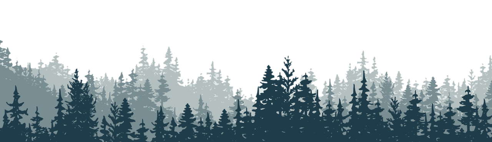

-
Poly Internship Follow-up
As a follow-up to my previous post, I can confirm That working at Poly was everything I had anticipated and more. Not only did I learn about how to work on a team more effectively, but I also delved deeper into python than I have ever been able to in school.
The project that our team of four interns was tasked with was to load test the Poly Lens platform to generate rigidity and expose any errors in the existing system. We achieved this by creating testing scenarios that would cause the system to react differently than its base state and observing the way it reacts. The system was created and developed in Python, and the generation of testing scenarios, creation of unique messages and devices, and collection of data were automated to reduce user interactions. This will allow for the system to run on servers for more data to be collected without the necessity of a user present.
In addition, after we had completed the project, we were tasked with data entry to ensure the HP acquisition went smoothly. One other intern and I decided that the entry could be automated rather than hand created. This would ensure correctness moving forward and more rapid input of data. We created the system in two days and ran it on the remaining hundred entries, saving the company several work hours. In addition, I was able to train another full-time employee on how to run the program so they could use it on an incoming thousand entries that would arrive after we left. In all, we were able to save Poly several hundred hours spread across a team of eight individuals.
-
Poly Internship
I am pleased to announce that I have been accepted onto the Poly team for the summer as a software development intern. I am enthusiastic to be working with code in an industry setting and excited to meet my peers who will be participating in the internship with me. More updates on my time at Poly will be sure to follow.
-
Mines Undergraduate Research Fellowship
This post marks the completion of my year-long undergraduate research opportunity under my graduate mentor, Hoon Seo. Throughout the course of the year, I was truly able to learn and experience the world of neural networks and machine learning. In addition, I feel as though this involvement educated me on several industry practices and professional standards that I would not have learned in the coursework of CSM alone.
The research involved taking drilling data from a real-world company and turning it into a 3-dimensional model of the ore deposits underground. The algorithm we used was called a Generative Adversarial Imputation Network, or GAIN. Essentially, this model takes a handful of data points and fills in the gaps with estimations of what the true values would be. Then, to test the data, the model looks at the output and attempts to discern which values were estimations. If it guesses incorrectly, that means the model is working, but if it finds the generated values, then the program will attempt the estimations again.
I am grateful to the Mines Undergraduate Research Fellowship for this experience, and I will make the most use of what I learned in my future computer science applications and projects.
-

Mountain Parks Electric Internship
At MPEI, I was able to stretch my computer science legs and experience what the professional tech world would be like. As this was my first Internship, I am grateful to Mountain Parks for hiring me and teaching me about IT and server management.
While on the job, I was assigned to various tasks, including the implementation of duo security for remote workers, writing onboarding scripts for new machines, and upgrading the company’s meeting room, among other things.
Even though this position was primarily in the world of IT, I learned a great deal that I have been able to apply to my studies and other involvements.


